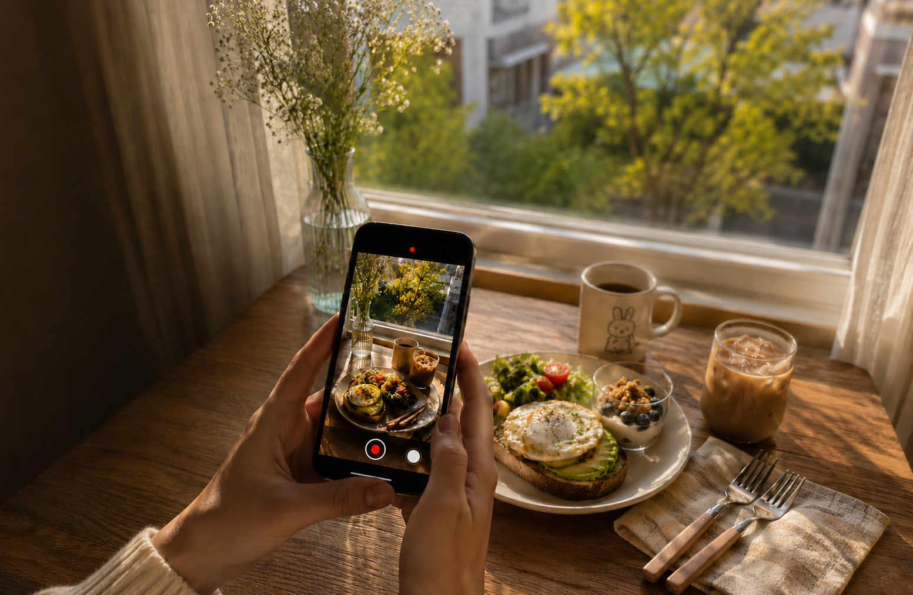

Nibble
Built and launched Nibble, a private video-sharing app for close relationships. Validated the concept through 30+ user tests and a live product demo to 40+ iOS developers in Taipei.
Overview
Nibble is a lightweight social communication app designed for close relationships: family, partners, and close friends. Unlike traditional social media platforms optimized for broadcasting and performance, Nibble focuses on intimate, low-pressure communication through short video moments.
I independently led the product vision, user research, product strategy, UI/UX design, AI-assisted prototyping, and user testing. The product is currently in TestFlight MVP stage.
Problem
Existing communication platforms create two opposite problems: social platforms like Instagram encourage performative sharing and social comparison, while messaging apps like LINE feel utility-heavy, cluttered, and emotionally cold.
For people in long-distance relationships, especially students moving abroad, families living apart, or busy friends, staying emotionally connected often becomes difficult despite constant communication tools.
How might we…
Design a communication experience that feels emotionally warm, lightweight, and personal, without the pressure of traditional social media?
Users frequently…
- hesitate to send small moments
- overthink how they appear online
- default to passive scrolling instead of meaningful interaction
- feel disconnected even while messaging daily
Goal
Product Goals
- Create a low-pressure communication tool for close relationships.
- Encourage users to share authentic everyday moments.
- Make asynchronous video communication feel emotionally intimate.
- Reduce friction between recording, sharing, and responding.
Strategic Questions
- Can emotionally driven micro-interactions increase engagement?
- How does private social behavior differ from public social media behavior?
- Can AI-assisted workflows help a solo PM/designer prototype and validate faster?
User Research
My initial insights came from preparing to move abroad for graduate school and wanting a better way to stay emotionally connected with family and friends in Taiwan. I then conducted lightweight qualitative research through conversations, product observation, peer concept tests, and analysis of emotional friction in existing communication flows.
To validate the idea beyond my own assumptions, I conducted user testing with 30+ participants and presented Nibble at a Taipei iOS developer meetup attended by 40+ developers and builders.
The feedback helped identify onboarding friction, refine feature priorities, and validate demand for a more personal, low-pressure way to stay connected through video.
People often record meaningful moments but never send them because sharing feels too serious or performative.
Key Findings
- Users wanted to share small moments without needing them to feel polished.
- Existing platforms felt either too public or too transactional.
- Video felt emotionally richer than text, but current flows required too much effort.
- Users enjoyed casual, imperfect videos from close friends more than curated content.
Market & Competitive Analysis
| Platform | Strength | Weakness |
|---|---|---|
| High-quality sharing and discovery | Performative and socially stressful | |
| LINE | Reliable communication | Emotionally cold and feature-heavy |
| BeReal | Authenticity-focused | Still semi-public and trend-driven |
| Snapchat | Fast casual sharing | Chaotic UI and less emotionally intentional |
Nibble positions itself as a private emotional communication layer between messaging apps and social media: close-friend-first, emotionally warm, lightweight, asynchronous, and free from public engagement metrics.
UI/UX Design
Interaction Direction
- Prioritized recording and replay as primary actions.
- Simplified hierarchy to reduce decision fatigue.
- Removed public-facing social metrics.
Emotional Design
- Designed reactions and comments to feel lightweight.
- Explored mailbox and letter metaphors.
- Focused on calm, soft interaction patterns.
Visual Identity
Nibble uses minimalist black-and-white illustrated mascots, Ugly Cat & Bunny, to create recognizable emotional branding, lower social pressure, and an approachable indie-product personality.
Solution
I designed and built the iOS MVP, end-to-end user flow, interaction architecture, UI system, onboarding concepts, social interaction patterns, and emotional reaction mechanics.
Current MVP Flow
- Record a short video.
- Replay before sending.
- Send to friends or groups.
- Recipients react with emojis or comments.
- Conversations continue through lightweight threaded chat.
Core Features
- video-first communication
- asynchronous interaction
- lightweight reactions
- friend/group sharing
Product System
- emotionally focused UI
- AI-assisted workflow
- interaction prototypes
- TestFlight MVP
AI-Assisted Development Workflow
Prototype
Rapidly explored product ideas and interaction patterns using AI-assisted tools.
Generate
Used iterative UI generation to test layout and visual directions faster.
Validate
Moved from concepts to clickable and functional MVP states for early feedback.
Build
Accelerated development without a full engineering team while preserving product judgment.
Impact & Results
Product Outcomes
- Built and launched a functional MVP on TestFlight.
- Conducted user testing with 30+ participants.
- Presented the product to 40+ iOS developers and product builders.
- Gathered qualitative feedback to iterate on onboarding, sharing flows, and user engagement.
- Validated demand for a more personal and emotionally connected communication experience.
PM Outcomes
- Translated emotional insights into product strategy.
- Prioritized MVP scope under time constraints.
- Iterated rapidly through user feedback.
- Used AI tools as PM leverage rather than replacement.
One of the strongest validation signals was that users described the app as feeling warmer and more personal than existing communication platforms.
Key Learnings
1. Distribution matters as much as product quality
Great products do not naturally gain users. This made me more interested in distribution strategy, shareability loops, emotional virality, creator-style product marketing, and indie app growth mechanics.
2. Emotional products require emotional onboarding
Users needed stronger context to understand why Nibble exists, who it is for, and how it differs from traditional messaging apps.
3. Simplicity is harder than adding features
I repeatedly reduced UI complexity, unnecessary actions, feature creep, and interaction overload to preserve focus and emotional clarity.
4. AI changes product iteration speed
AI-assisted workflows lowered execution barriers, but strong product judgment became even more important. AI can accelerate execution, but not product taste or strategic thinking.
Product Artifacts
- Product concept documentation
- User flow diagrams
- MVP feature prioritization
- Wireframes
- UI iterations
- Design system exploration
- TestFlight MVP
- Brand mascot system
- Interaction prototypes
- User journey maps
- Product decision tradeoffs
- AI-assisted workflow examples